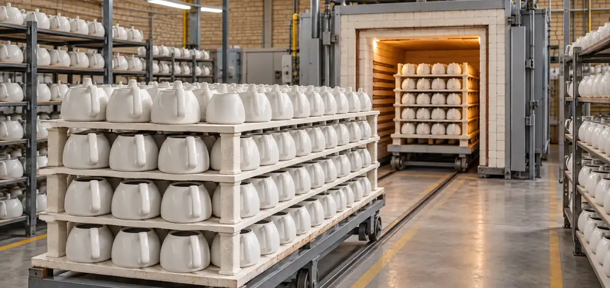
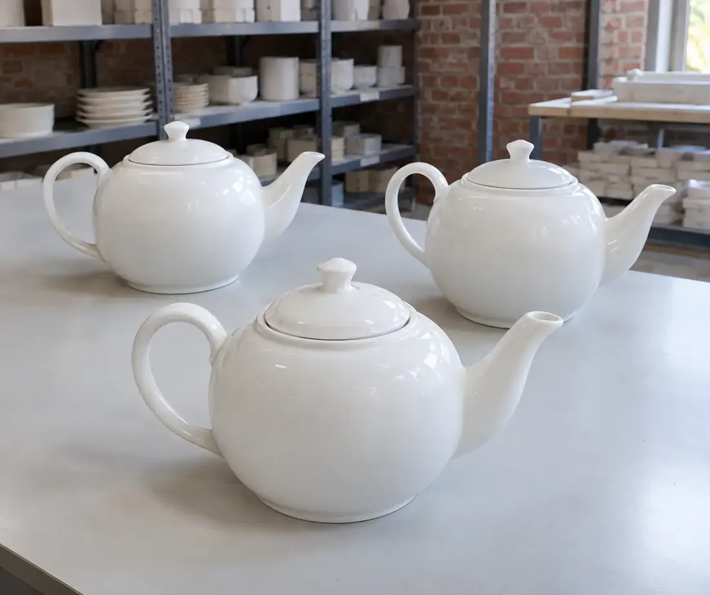

تولید مستقیم
تولید محصولات با تمرکز بر کیفیت و کنترل مراحل ساخت؛ از آمادهسازی مواد اولیه تا بستهبندی، همه در مجموعهٔ خودمان.
چینی لوتوس · اصفهان · از ۱۳۹۵
چینی لوتوس با تمرکز بر تولید قوری و متعلقات مرتبط با سرو و پذیرایی، فعالیت خود را با هدف ارائهٔ محصولاتی با کیفیت، طراحی کاربردی و پاسخگو به نیاز بازار آغاز کرده است. امروز با تکیه بر تجربهٔ تولید، شناخت بازار و توان تأمین سفارشهای عمده، محصولات خود را به مشتریان و همکاران در سراسر ایران عرضه میکنیم و در مسیر توسعهٔ بازارهای صادراتی نیز گام برمیداریم.

سالن تولید چینی لوتوس — اصفهان

در یک نگاه
پنج اصل که مسیر تولید و همکاری ما را مشخص میکند.
تولید محصولات با تمرکز بر کیفیت و کنترل مراحل ساخت؛ از آمادهسازی مواد اولیه تا بستهبندی، همه در مجموعهٔ خودمان.
تأمین محصولات برای عمدهفروشان، کتریسازان، فروشگاهها، مراکز پخش و مجموعههای تجاری در سراسر کشور.
ارسال و تأمین سفارش برای مشتریان و همکاران در نقاط مختلف کشور، با هماهنگی واحد فروش.
آمادگی برای همکاری تجاری و تأمین سفارش در بازارهای خارج از ایران، متناسب با شرایط هر سفارش.
توجه به جزئیات محصول، کنترل کیفیت در چند مرحله و بستهبندی مناسب برای حمل و ارسال.
محصولات
طرحها با تمرکز بر نیاز بازار و کاربرد واقعی طراحی و تولید میشوند؛ از نقشهای سپید و برجسته تا گلوبوتهٔ رنگی، کتیبهٔ خوشنویسی و نوارهای زرین.
LT-01
کتیبهٔ قابدار با پرترهای به سبک نقاشی قاجاری روی زمینهٔ سرخ، با نقوش زرین در اطراف.
 LT-02
LT-02
گلهای رز به رنگ آبی نیلی روی بدنهٔ سپید.
 LT-03
LT-03
قفس و گلهای رنگی در میان حاشیهٔ زرین.
 LT-04
LT-04
کتیبهٔ مشکی با خوشنویسی زرین روی بدنهٔ سپید.
 LT-05
LT-05
نقش برجستهٔ گلوبوته به رنگ سپید روی سپید، با لبهٔ نقرهای.
 LT-07
LT-07
نوار چلیپای زرین دور پایین بدنه.
 LT-08
LT-08
شبکهٔ لوزیهای نقرهای روی پایین بدنه.
 LT-09
LT-09
نقش گلوبوتهٔ نقرهای با حاشیهٔ ظریف روی بدنه و درپوش.
کنترل کیفیت
در چینی لوتوس، کیفیت محصول تنها در پایان فرآیند تولید بررسی نمیشود. تلاش مجموعه بر این است که در تمامی مراحل مختلف تولید، کیفیت محصولات با دقت بررسی شده و محصول نهایی پیش از بستهبندی و ارسال در چند مرحله بررسی شود.
کنترل ظاهر، سلامت محصول، کیفیت سطح، یکنواختی تولید و شرایط بستهبندی، از جمله مواردی هستند که در فرآیند کنترل کیفیت مورد توجه قرار میگیرند.
هدف چینی لوتوس، ارائهٔ محصولی است که مشتری با اطمینان آن را خریداری، عرضه و استفاده کند.

فروش عمده
اگر به دنبال تأمین مستقیم و مطمئن محصولات هستید، چینی لوتوس آمادهٔ همکاری با مجموعههای تجاری و خریداران عمده است. ما با هدف ایجاد همکاریهای پایدار، محصولات خود را برای این مجموعهها تأمین میکنیم:

ارسال به سراسر ایران
محدود به یک شهر نیستیم. محصولات چینی لوتوس برای مشتریان و همکاران در سراسر ایران تأمین و ارسال میشود. هدف ما این است که مشتریان، فارغ از موقعیت جغرافیایی، بتوانند سفارش خود را با هماهنگی واحد فروش ثبت کرده و محصول را در مقصد دریافت کنند.
| شهرهای تحت پوشش | سراسر ایران |
|---|---|
| روش ارسال | شرکتهای حمل و نقل و باربریها |
| نحوهٔ بستهبندی | تک جعبه چیدمانشده در کارتن مادر |
| زمان تقریبی ارسال | با توجه به سفارش متغیر است |
صادرات
کیفیت یک محصول زمانی معنا پیدا میکند که بتواند در بازارهای مختلف نیز جایگاه خود را پیدا کند. چینی لوتوس با تکیه بر توان تولید و ظرفیت تأمین سفارشهای عمده، توسعهٔ همکاری با بازارهای خارجی را به عنوان یکی از مسیرهای رشد خود دنبال میکند.
الگوهای همکاری
اینها الگوهای رایج سفارش در چینی لوتوس است. اگر نیاز شما در این فهرست نیست، در گفتوگو با واحد فروش بررسی میشود.
سبد کامل چند طرح پرفروش
ساختار همکاریتأمین ترکیبی از طرحهای سپید و نقشدار، در بستهبندی کارتنی مناسب انبار و عرضه.
قوری در ابعاد و ظرفیتهای مختلف
ساختار همکاریتأمین قوری سهسایز و قوری کف ۱۴ (سماوری) همراه با متعلقات مرتبط با سرو چای.
تأمین مستمر و زمانبندیشده
ساختار همکاریبرنامهریزی سفارشهای دورهای با هماهنگی قبلی، متناسب با ظرفیت تولید مجموعه.
قوریهای مقاوم و پرکاربرد
ساختار همکاریتأمین طرحهای ساده و مقاوم برای سرو روزمره، با امکان تعریف سفارش تکرارشونده.
طرحهای پرنقش برای سرو رسمی
ساختار همکاریانتخاب طرحهای قاجار، گلشنزر و نستعلیق برای سرو در مراسم و پذیرایی رسمی.
تولید با نشان تجاری خودشان
ساختار همکاریبررسی امکان اجرای نقش، بستهبندی یا درج نشان تجاری، بر اساس ظرفیت تولید.
تأمین برای بازار خارج از ایران
ساختار همکاریبررسی شرایط سفارش صادراتی، حجم سفارش و زمانبندی تأمین متناسب با بازار مقصد.
تصاویر و معرفی دقیق محصول
ساختار همکاریدریافت تصاویر طرحها و مشخصات، برای معرفی محصول در ویترین آنلاین مجموعه.
دربارهٔ برندها و مجموعههای همکار بیشتر بدانید.
نحوهٔ سفارش
هفت گام ساده از انتخاب طرح تا تحویل سفارش در مقصد.
شرایط فروش
| حداقل سفارش | با توجه به سفارش مشتری |
|---|---|
| فروش خرده | بله |
| فروش عمده | بله |
| شرایط پرداخت | متناسب با شرایط، با مشتریان توافق خواهد شد |
| زمان آمادهسازی | متناسب با میزان و نوع سفارش |
| شرایط ارسال | با توافق با مشتری |
| هزینهٔ ارسال | بر عهدهٔ مشتری |
| شرایط سفارش صادراتی | متناسب با سفارش تعیین خواهد شد |
سفارش اختصاصی
در صورت امکان، چینی لوتوس میتواند سفارشهای خاص و نیازهای اختصاصی مشتریان را بررسی کند. از انتخاب مدل و ابعاد تا رنگ، طرح، بستهبندی یا درج نشان تجاری، نیاز مشتری بررسی شده و امکان اجرای آن بر اساس ظرفیت تولید مجموعه ارزیابی میشود.
سؤالات متداول
بله. چینی لوتوس محصولات خود را برای عمدهفروشان، کتریسازان، فروشندگان، مراکز پخش و مجموعههای تجاری تأمین میکند.
بله. امکان تأمین و ارسال سفارش برای مشتریان در سراسر ایران وجود دارد.
بله. سفارشهای عمده و حجمی با توجه به نوع محصول و ظرفیت تولید مجموعه بررسی و تأمین میشوند.
برای دریافت قیمت و شرایط همکاری، میتوانید با واحد فروش چینی لوتوس تماس بگیرید یا درخواست خود را در واتساپ ارسال کنید.
چینی لوتوس امکان همکاری با مشتریان و مجموعههای تجاری خارج از ایران را نیز بررسی و دنبال میکند.
بله؛ بسته به نوع و تعداد سفارش و همچنین امکان تولید محصول، بررسی و اعلام میشود.
حداقل سفارش متناسب با نوع محصول متغیر است و در گفتوگو با واحد فروش تعیین میشود.
محصولات پس از آمادهسازی و بستهبندی، از محل تولید / انبار چینی لوتوس برای مشتری ارسال میشوند.
پاسخ پرسش خود را پیدا نکردید؟ با واحد فروش تماس بگیرید.
کارشناسان واحد فروش چینی لوتوس آمادهٔ پاسخگویی دربارهٔ طرحها، شرایط تأمین عمده، زمان آمادهسازی و ارسال به سراسر ایران هستند.